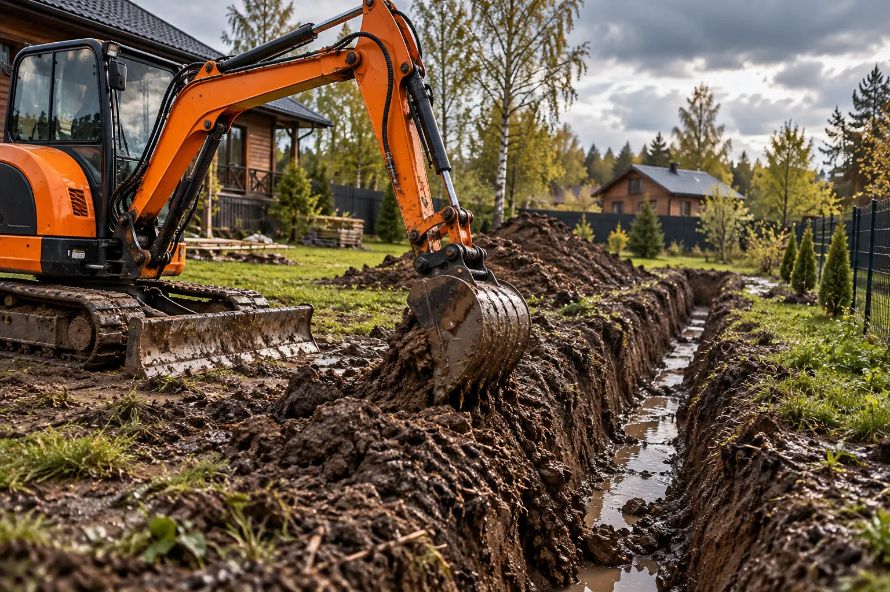
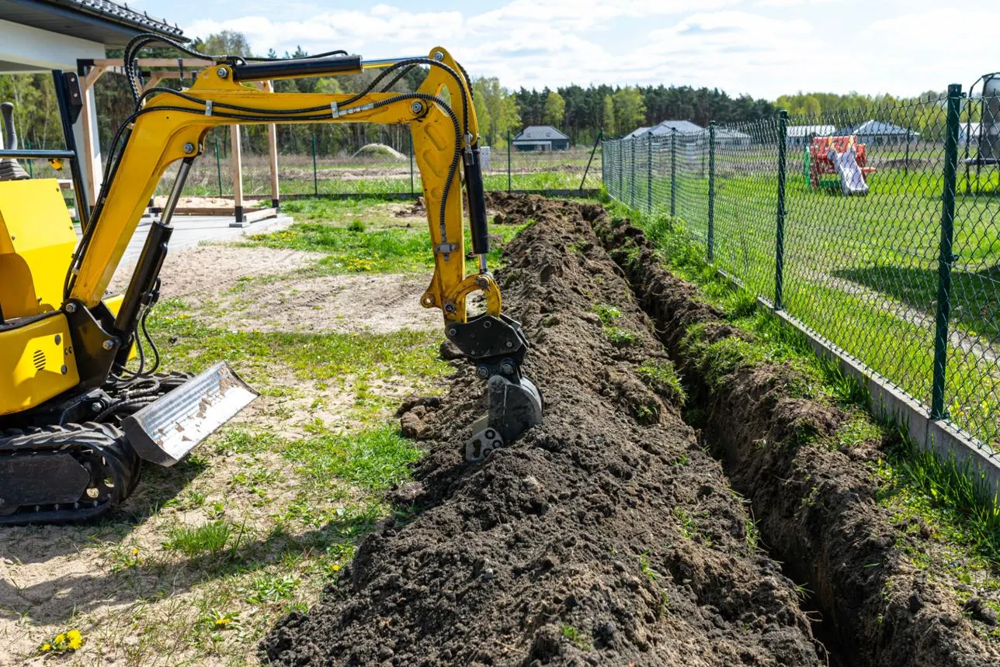

Схема водоотведения
Куда отводится вода, есть ли схема трасс, уклоны и согласования?
Копка траншей и приямков для дренажных труб, ливневой канализации, водоотводных канав и колодцев.

Роем траншеи и приямки в соответствии с согласованной схемой водоотведения. Полноценное проектирование и монтаж дренажа не включены автоматически.
Состав и возможность работ зависят от конкретной машины, грунта, подъезда и проектной документации. Изображения здесь иллюстративные, а не фото реализованных заказов.
Куда отводится вода, есть ли схема трасс, уклоны и согласования?
Требуемые глубины, отметки и точки колодцев задаются проектом.
Грунтовая вода, доступ техники, риск обрушения стенок траншей.
Иллюстративные кадры показывают характер работ, а не конкретные выполненные заказы.

Фотографии предоставлены для оформления макета. Не являются портфолио подрядчика.
Чтобы согласовать стоимость и объём, важно заранее определить состав земляных работ. Дополнительные операции обсуждаются отдельно.
Описать задачуПлан дренажа с уклонами, точки сброса воды, расположение существующих сетей.
Расчёт дренажной системы, укладка труб, засыпка щебнем и монтаж колодцев.
Место, примерные размеры и несколько фотографий участка помогут понять объём работ и условия подъезда. Стоимость обсуждаем после уточнения деталей.